Assembly instructions
Start assembling the Acrylic laser cut part “Base” with the Thorlabs RS05P Pedestal posts using M6 screws. That posts are used to attach the rotary stage to the experimental table where the experiments are taking place.
 |
| Figure 1. Base assembly |
Insert two M6 screws with their nuts in order to attach the tube guide where the horizontal tube goes through and connects with the elbow. Attach with M6 screws the two Thorlabs posts PH_50 and the TR_50 to the base.
| 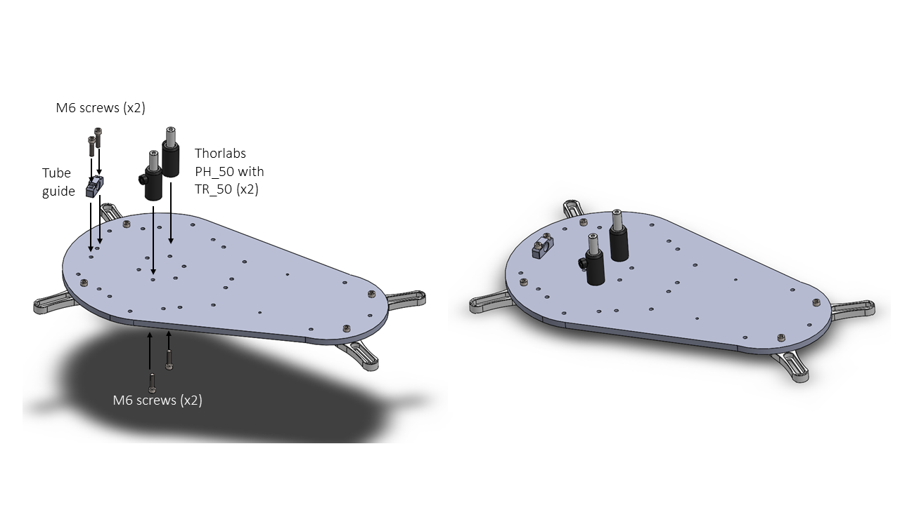 |
| Figure 2. Rotary joint telescopic posts assembly |
The two Thorlabs PH_50 with the TR_50 are used to hold the rotary joint. In order to attach the rotary joint, you only need two M6 or two M4 with washers depending on the position of the TR_50 (in one side is M4 in the other is M6). The tubing can be installed now or at the end of the assembly.
 |
| Figure 3.Rotary joint assembly |
Attach the seven Thorlabs RS150 posts to the base using M6 screws.
 |
| Figure 4. Thorlabs RS150 assembly |
|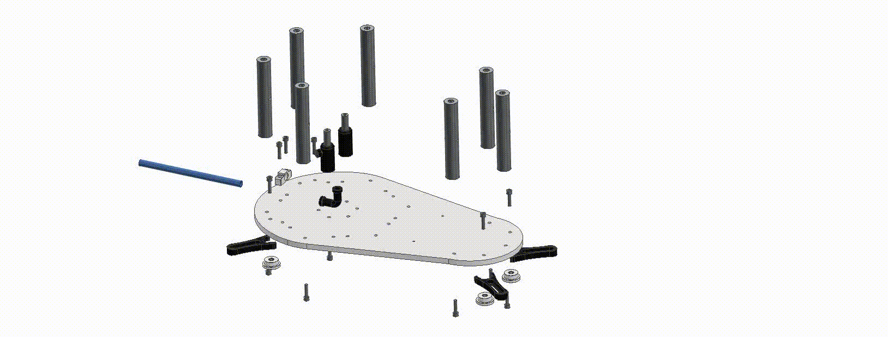|
|:--:|
| Base Assembly |
Once you have the rotary joint spacer 3D printed, insert M3 brass threaded inserts and then cure the part with UV light.
 |
| Figure 5. Rotary joint spacer threaded inserts |
The Rotary Joint spacer is assembled with the rotary joint using 25 mm length M3 grab screws. These are inserted using the radial holes on the bottom of the part.
 |
| Figure 6. Rotary joint spacer assembly |
 |
| Figure 7. Rotary joint assembly |
The crossed roller bearing BRS RU124X must be assembled with the Platform 2 using ten M5 bolts and M5 nuts.
 |
| Figure 8. Crossed roller bearing assembled with the Platform 2 |
The manufacturer recommends the following installation method:
|  |
|:--:|
| Figure 9. Crossed roller bearing installation method (left) and Cross roller bearing installed (right) |
|
|:--:|
| Figure 9. Crossed roller bearing installation method (left) and Cross roller bearing installed (right) |
Warning
On the laser cut part “Platform 2” it is recommended to make the chamfers for the M4 countersink screws that will hold the motor. This step is important because the head of the screws have to be at the same level as the surface of the Platform 2, otherwise they might touch the pulley or the belt.
 |
| Figure 10. Detail of the countersink screws level with the surface |
Insert the four M4 screws with their nuts to hold the Nema 23 stepper motor with the motor spacer.
 |
| Figure 11. Motor assembly |
The big pulley can be laser cut as shown in Figure 12. It is composed by six layers of acrylic (2 x layer 1 in 5 mm thickness, 1 x layer 2 in 5 mm thickness, 2 x layer 2 in 3 mm thickness and 1 x layer 3 in 3 mm thickness). The threaded inserts are attached like in the previous version. In this case we recommend to heat them with the soldering iron until they melt the plastic around and go through the different layers. It is recommended to insert a couple using the external thread in order to get good alignment of the pulley teeth.
Alternatively, there is an STL file to 3D print the pulley in one single piece. We haven’t tried that option yet.
 |
| Figure 12. Big pulley assembly (left) and threaded inserts (right) |
After laser cutting the circular platform, glue a small 5 mm Neodymium magnet as indicated in figure 14. One of the surfaces of the magnet has to be coincident with the bottom surface of the platform. The magnet is there to interact with the Hall effect sensor at the bottom and trigger a state change to high or low to complete the homing position. It is also essential to make the chamfer on the outside holes for the countersink screws.
 |
| Figure 13. Magnet gluing and chamfers |
Insert eight M6 screws to attach the Circular platform with the big pulley using the threaded inserts thread.
 |
| Figure 14. Circular platform and big pulley assembly |
Assemble the Base with the Platform 2 using 7 M6 screws.
 |
| Figure 15. Base and Platform 2 assembly |
Assemble the Hall Effect sensor used for the homing sequence, using two M3 screws, two Hall effect spacers and the Hall Effect holder.
 |
| Figure 16. Hall Effect sensor assembly |
 |
| Figure 17. Hall effect sensor placement |
In order to assemble the circular platform, place the spacer in contact with the inner ring of the bearing, then place the circular platform previously assembled with the big pulley on the spacer and use the M5 screws also installed as in the first step of the bearing. After that you can use the Thorlabs PH_50 and the TR_50 to adjust the height of the rotary joint spacer until this one makes contact with the circular platform surface. Once it makes contact you can insert six M4 screws to secure it.
| 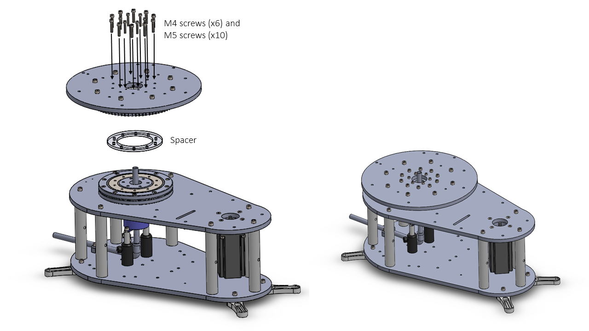 |
| Figure 18. Circular platform assembly |
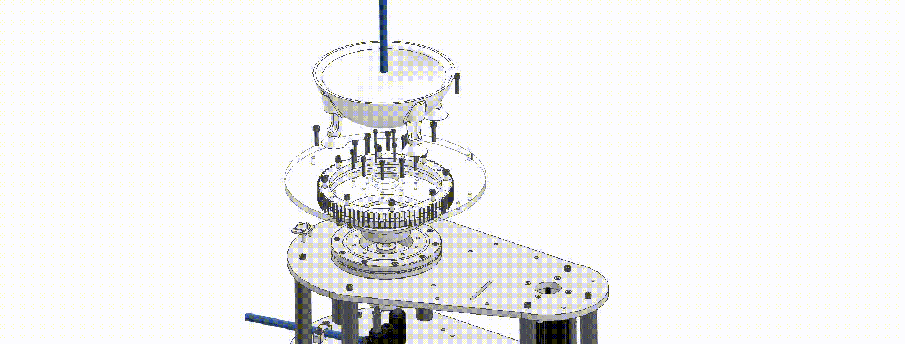
| 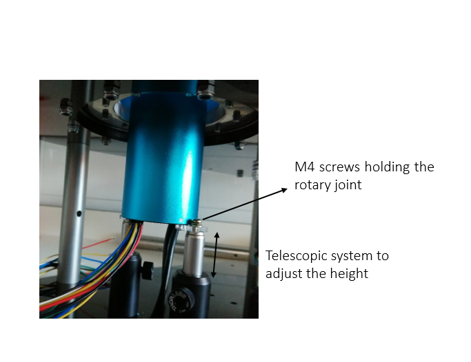 |
| Figure 19. Adjustment of the Rotary joint height |
The shaft of the Motor is 8 mm in diameter and the inner diameter of the small pulley (https://uk.rs-online.com/web/p/belt-pulleys/1465412/) is 6 mm. The inner diameter of the pulley has to be increased to 8 mm with a vertical drilling machine/milling machine (Figure 20). Add a second hole with 3.3 mm diameter (using a 3.3 mm drill bit) to add the screw that prevents the pulley to rotate around the motor shaft. Thread the hole using an M4 tap toolkit. For that step, the use of a vice is recommended to hold the pulley while drilling. In order to connect the encoder shaft with the pulley, the encoder attachment must be 3D printed and two extra 2.5 mm holes must be drilled at the top of the pulley. Then, an M3 thread must be made using the M3 tap tool.
| 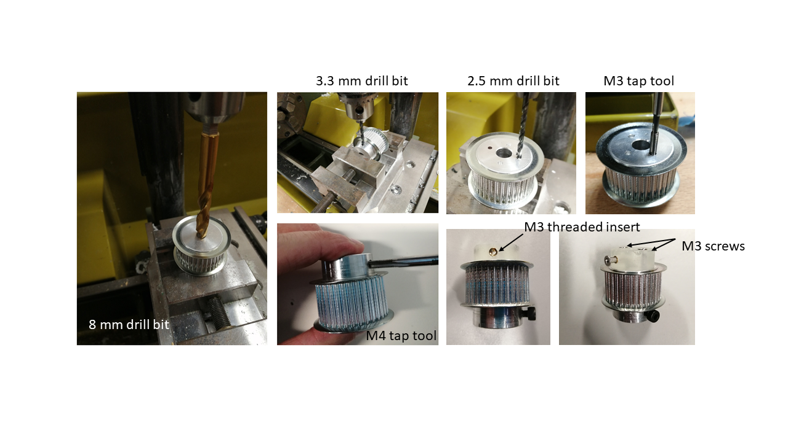 |
| Figure 20. Small pulley |
The pulley can be assembled before or after attaching the motor with the platform 2.
| 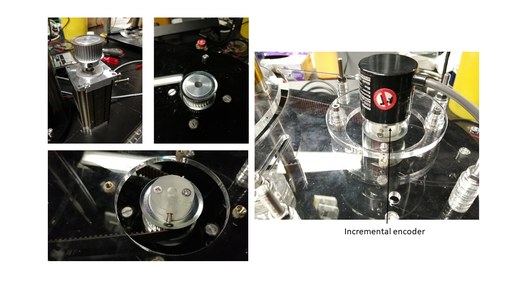 |
| Figure 21. Metal small pulley modified |
The belt has to be enveloping the small pulley when you insert it on the motor shaft. You will feel a “High” tension when pulling the belt since it is rigid.
!!! warning:
Remember to put the flat part of the motor shaft oriented in a comfortable position to make pressure with the pulley M4 screw afterwards.
 |
| Figure 22. Small pulley with motor shaft assembly |
The big pulley is attached with the Circular platform with M6 screws and then attached with the crossed roller bearing using M5 screws.
| 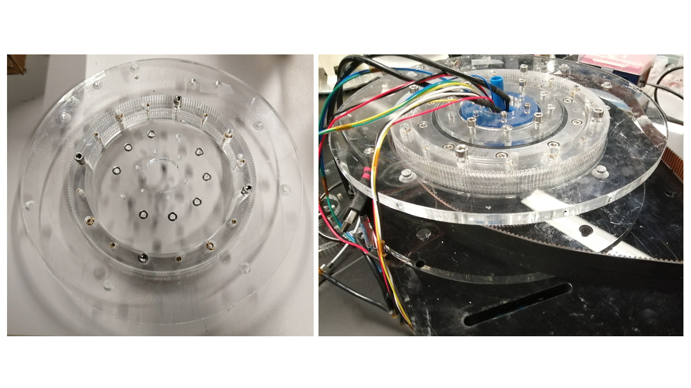 |
| Figure 23. Assembly of the big pulley with the platform and both with the crossed roller bearing using M5 screws |
Three M3 screws are used to attach the Encoder holder with the encoder.
 |
| Figure 24. Encoder holder and encoder assembly |
Once the belt cover part is cut with the laser, four brass M4 threaded inserts must be inserted on the holes, heating them with the soldering iron or just by applying pressure.
 |
| Figure 25. M4 threaded inserts on the belt cover |
Now four M4 screws can be inserted from the top placing the spacers coincident with the holes.
 |
| Figure 26. M4 threaded inserts on the belt cover |
The belt cover can now be installed using M6 screws, nuts and the cover spacers. After that, the encoder shaft needs to be put in contact with the M4 grub screw at the top of the pulley.
| 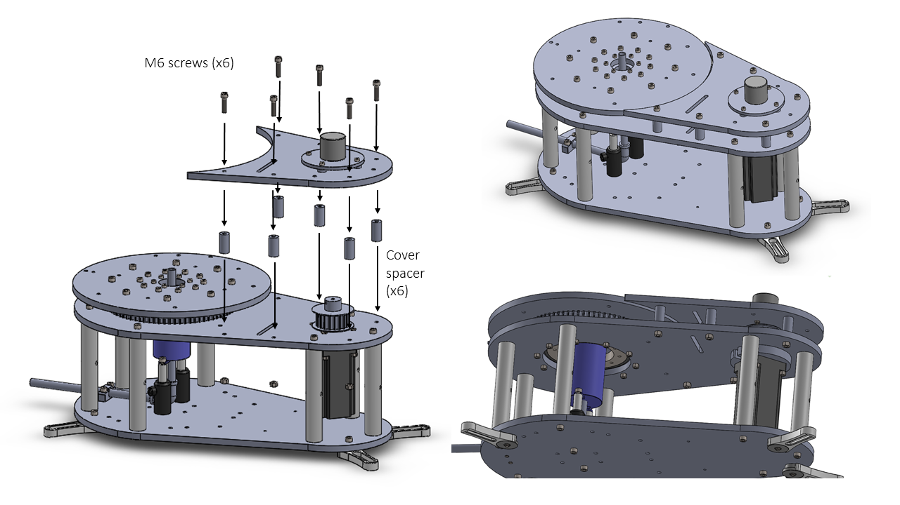 |
| Figure 27. Belt cover assembly |
 |
| Small pulley assembly |
Two ball bearings are inserted on the belt tensor and one M6 screw is used to install the belt tensor in the guide. Use four washers to get a good fit on the inside and outside of the screw with the two sides of belt cover and Platform 2.
| 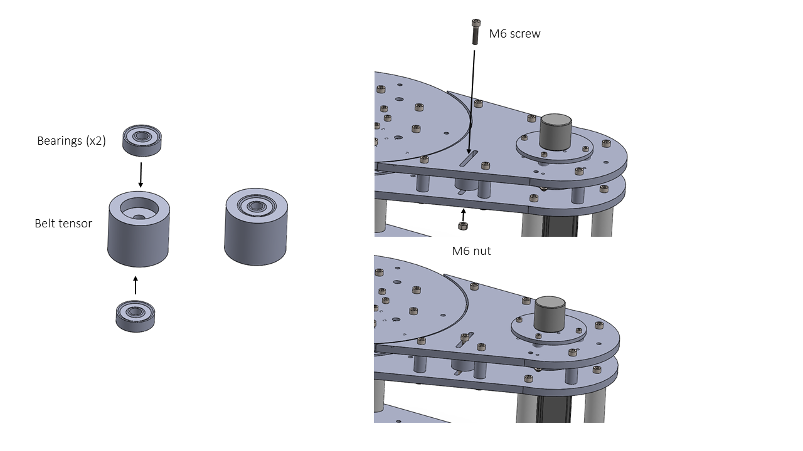 |
| Figure 28. Belt tensor assembly |
| 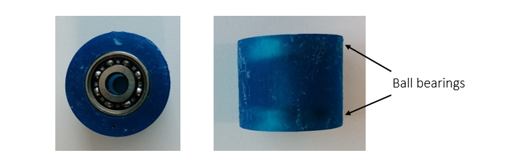 |
| Figure 29. Detail of the two ball bearings |
Now adjust the tension of the belt. After that check that the belt is not touching the bottom or the top surfaces.
 |
| Figure 30. Space on both sides of the belt |
The sphere holder has to be attached with four M6 screws.
 |
 |
| Figure 31-32. Sphere holder assembly |
All the components that go on the circular platform : Head fixation post, Pupil tracking camera, Reward delivery system and optical sensor holders, can be assembled as with the Stenmeyer DT240 version.
| 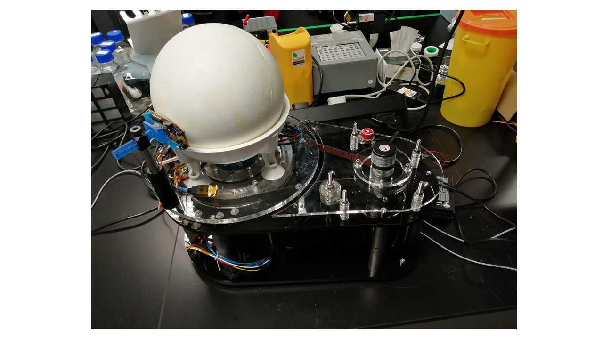 |
| Figure 37. Complete assembly |